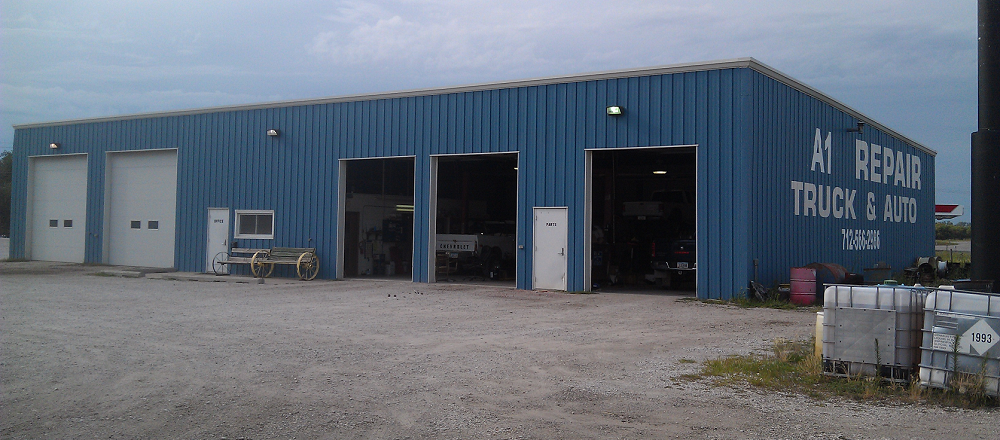

Who We Are
A-1 Repair is a family owned and operated auto repair shop that works to cover all of your mechanic needs in one place. The owner Tom Snyder grew up in Underwood and has worked on cars and trucks his whole life. He has over 35 years of experience with all types of vehicles and tractors.
Hours
Mon-Fri: 8am - 6pm Sat: 8am - 2pm


What We Strive For
Our goal is to be your one stop shop for everything mechanical. We work on everything from lawnmowers to semis and heavy duty trucks and we do everything from oil changes to engine replacement. We do all of this while consistently being much more affordable than any of our competitors.
Linkback